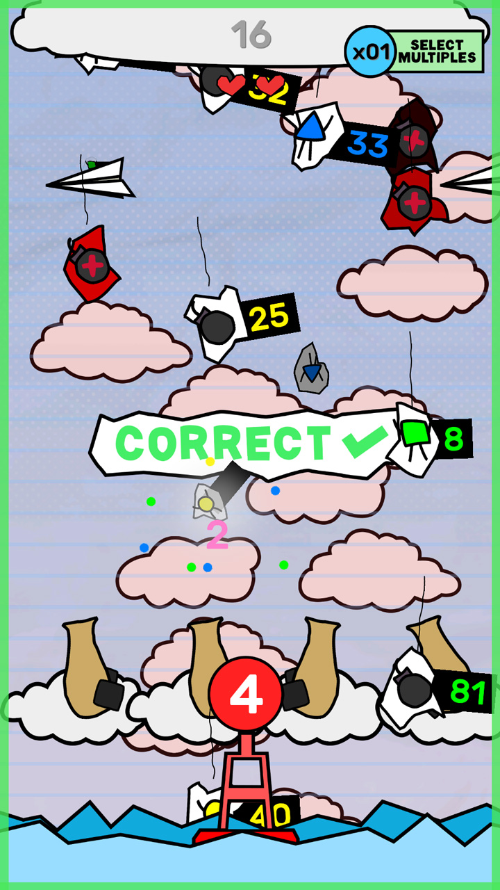
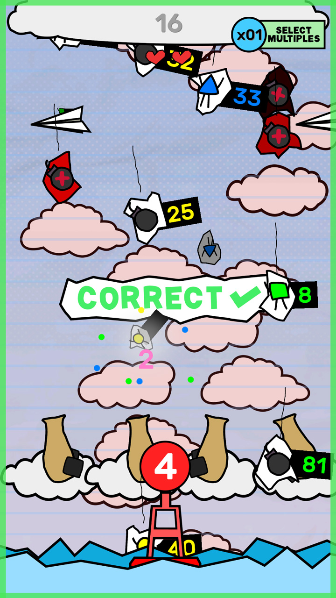

DOYLE T.
DETAIL
- This Resume: doy-lee.github.io
- Email: doylet@protonmail.com
- Github: github.com/doy-lee
- Flickr: flickr.com/doy-lee
RESUME QR CODE

WORK EXPERIENCE
-
CURRENT
2020 OCT
-
AOS Group
AI/Software Engineer
-
AI Team (aosgrp.com)
- C++11, AI/Agents/BDI, Qt, Developer Tools, Windows/Linux
- Working on AI technology building developer tools and the API in order to facilitate the ability to coordinate team-like cooperation between intelligent systems via a multi-agent "Belief, Desire and Intentions" (BDI) paradigm.
-
2020 OCT
2018 FEB
-
Loki
Blockchain Engineer
-
Blockchain Team (github.com/loki-project/loki/commits?author=Doy-lee)
- C++14, Boost, Docker/CMake, CI, Cryptography, Open Source, Windows/OSX/Linux/Android
- Derive Service Nodes (SN) via state on Blockchain with custom cryptographic registration, deregistration, payout transactions, P2P behaviour metrics and voting mechanism to remove bad SNs in a distributed network.
- SN Enforced Chain Checkpointing, SN's autonomously vote over P2P, securing blocks and handle conflicting alternative-chains to provide stronger guarantees on the finalized chain.
- Loki Name System (DNS via Blockchain). DNS records for wallets, usernames & websites on a privacy Blockchain. Expiration, transfers/updating via private-public key cryptography and an end user API via JSON RPC.
- Implement and transition from Proof of Work to Proof of Stake on a distributed node network, via a commit-reveal scheme generating entropy for blocks.
- Dev-ops, platform builds, distribution, time-critical fixes & updates in production.
- Fix/improve/create test tooling for the Service Node network including a re-write of the Monero testing framework and integration tests using named pipes over multi-process.
-
2017 NOV
2017 AUG
-
Wargaming
Intern/Software Engineer
-
- C++11, Qt, Jira, Perforce, Plastic
- Working on internal engine for content creation, bug fixing 21 tickets over intern duration.
Client Tools Team (wargaming.com/en/about/)
SIDE PROJECTS
-
CURRENT
-
Dqn Library
-
Personal Utility Library C++ (github.com/doy-lee/dqn)
- Custom memory allocators for the cache, reduce malloc overhead, control over memory model and lifetimes.
- Minimal allocating arrays/strings/builders w/allocator API, stack based variants for cache and minimal overhead.
-
CURRENT
-
Novel/Kay Engine
-
Interactive Fiction/2D Game Engine C++
- Side project to build interactive fiction to encourage learning new languages enjoyable.
- Custom IMGUI and Instrumenting Profiler w/Frame Graph, Call Table
-
CURRENT
-
Raylib SIMD
-
Raylib SIMD Implementations (Rendering) (github.com/doy-lee/RaylibSIMD)
- Reimplements Raylib's software rendering using SIMD via SSE (and soon AVX)
- Practice implementing SIMD versions of scalar algorithms branchless, resulting in ~4x speed up
-
2017
.
.
2016
-
DTRenderer
DChip8
Math Masher
Dengine
-
3D Software Renderer from First Principles (github.com/doy-lee/DTRenderer)
CHIP8 Interpreter (Solo, C/C++, Win32) (github.com/doy-lee/dchip-8)
Mobile Game (C++, Photoshop, Cocos2dx) (doy-lee.github.io/luneaustralia)
Basic 2D Engine For Learning (Solo, C++, OpenGL, GLFW, STB, OpenAL) (github.com/doy-lee/dengine)
EDUCATION
-
2014-2017
-
UNIVERSITY OF NEW SOUTH WALES
-
Bachelor of Science (Computer Science)
SKILLS/INTERESTS
LOKI - Privacy Cryptocurrency for Transacting/Messaging
SUMMARY
Loki is an open-source, non-for profit private cryptocurrency, forked from Monero focusing on metadata-less privacy, decentralising the internet/finance and messaging stack and removing any single authoritative third-party whilst using the internet privately (similar to Tor, I2P, VPNs, Signal, Telegram).
As the primary Blockchain engineer, I work towards developing the infrastructure to allow users to contribute to the network by running Loki software on the network and programmed to route traffic and messages privately (otherwise known as Service Nodes).
MILESTONES
Service Node Network
https://docs.loki.network/ServiceNodes/SNOverview/- The backing architecture of services provided by Loki
- Extending transactions to serve cryptographically private & secure registration/blacklisting/unlocking/voting of Nodes
- Penalizing/Rewarding (mis)behaving Service Nodes, on-chain payment and locking funds on unavailable Nodes.
- Keep network consistent against malicious miners/nodes by gracefully rolling back state and banning.
- Develop a node grouping system (Quorums) per block, to facilitate autonomous voting behaviour over P2P
- JSON RPC API for statistics used by external services for metrics (i.e. CoinMarketCap, Masternodes Pro, lokidashboard.com)
Service Node Checkpointing
https://github.com/loki-project/loki-improvement-proposals/blob/master/LIPS/LIP-3.md- Defend against 51% attacks on the Blockchain and mitigate double spends
- Additional consensus rules to lock in blocks autonomously by Service Nodes
- Improves the previous manual system of updating hardcoded lists per release to passively locking the chain as it progresses.
Loki Name System
https://docs.loki.network/LokiServices/Messenger/LokiNameSystem/- Add DNS over Blockchain for user friendly names that map to cryptographic public keys (Wallets, Messenger, Lokinet).
- Burning funds from wallets to purchase names
- Interop with Libsodium, Monero cryptography for encryption/decryption
- End User API for integration across external services such as Session Messenger and Blockchain wallets
Pulse (Proof of Stake)
https://github.com/loki-project/loki-improvement-proposals/blob/master/LIPS/LIP-5.md- Transition from Proof Of Work to Proof Of Stake
- Coordinate commit, reveal scheme to generate and collect entropy from quorum of nodes
- Multi-round process to synchronise data, prevent leaking of random entropy and ensure no biasing of results
- Fail safe mechanisms to support round failure, and network failure, i.e. falling back to Proof of Work when unable to coordinate the group
Other
- Loki Onion Blockchain Explorer - Forked and repurposed for additional Service Node information
- Loki Integration Tests - Multi-process IPC to stdin/sdout Loki daemons to simulate user interaction
- Loki RPC Doc Generator - Custom Recursive Descent Parser for generating documentation
- Rewriting core testing framework to extensively test new Service Node features
- Handling cross platform builds, CI and distribution (Windows, Linux, OSX, Android)
LINKS
- Loki Homepage (loki.network)
- Main Github (github.com/loki-project/loki-core)
- Main Commits (github.com/loki-project/loki-core/commits?author=Doy-lee)
- Block Explorer (github.com/loki-project/loki-onion-blockchain-explorer)
- RPC Doc Generator (github.com/doy-lee/loki-rpc-doc-generator)
- Integration Testing (github.com/doy-lee/loki-integration-testing)
NOVEL/KAY ENGINE - Interactive Fiction/2D Game Engine

SUMMARY
Kay Engine is a drop-in engine designed for rapid prototyping. It provides basic services for accessing a rendering/game loop, multithreaded work queues, managed memory, IMGUI for developing applications and a inbuilt profiler. Its goal is to provide a highly-reusable engine for my personal projects.
It currently uses parts of Raylib for the engine and is currently under development.
Novel is an exploration into learning languages via semi-interactive fiction using the Kay Engine. By providing narrated stories and their translations paired with multimedia interaction (synced karaoke-like highlighted subtitles, playback speed modifiers, backdrops and so forth ...) to enhance learning.
It is currently under development in my spare time.
FEATURES
- Custom IMGUI with containers, buttons, layouts and custom composable widgets (with combining primitives)
- Per Thread Custom Memory Allocator(s) avoid allocating contention across threads, simplify memory management
- User Input, Command Buffers Style Rendering
DQN LIBRARY - Personal Utility Library C++

SUMMARY
DQN is a single file header utility library backed by unit tests to improve foundational programming knowledge and facilitate rapid prototyping.
It provides data structures that focus on data/memory/cache friendliness and giving control back to the user. Primarily stack friendly allocators, arrays and strings. DQN is a realisation that custom built tools for your purpose make more efficient programs, increase development speed and reduce complexity.
This project is inspired by Sean Barett's single file libraries.
LINKS
- Github (github.com/Doy-lee/dqn)
DTRENDERER (2017) - 3D Software Renderer from First Principles

SUMMARY
DTRenderer is an attempt to build a simple software renderer from the ground up. The main goal is to build an intuitive understanding of graphics mathematics, rendering pipeline and core concepts. It runs as a Win32 program with minimal dependencies.
MILESTONES
2D Software Rendering
- Alpha Blending
- Bilinear Filtering
- Correct Color Space Pipeline (SRGB <-> Linear)
- Rasterisation
- Texture Mapping
- Translation, Rotation, Scale
3D Software Rendering
- Full Bright, Flat, Gouraud Shading
- Orthogaphic, Perspective Projections
- Translation Rotation Scale
Misc.
- Custom Wavefront Obj Loader (minimal subset)
- Hot Reloadable DLL for Renderer Code (taken from Handmade Hero)
- SIMD "Optimisation" (with a grain of salt, tried to with some % improvement)
LINKS
- Github (github.com/Doy-lee/DTRenderer)
MATH MASHER (2017) - Educational Mobile Math Game
 


SUMMARY
Math Masher is a cross-platform mobile app that aims to teach basic arithmetic skills including addition, subtraction and multiplication by gamifying the learning experience. The app is developed with a team using the Cocos2dx framework in C++.
My role in the project is as the lead developer and assisting role with asset design.
MILESTONES/RESEARCH
Features that have been implemented at one point or tasks responsible for.
- Project Management (Trello, Minutes Meeting, Code Review etc.)
- Game Engine Architecture (Gameplay, UI, Shop, Debug)
- Basic Sound Editing (Compressor, EQuing, Normalisation)
- Asset Designs (Assisting with graphical asset creation)
LINKS
- Official Website (deprecated, archive only) (doy-lee.github.io/luneaustralia)
- Trailer (youtube.com/watch?v=AUozUZ8aY7g)
DCHIP8 (2017) - CHIP8 Interpreter

SUMMARY
DCHIP8 aims to emulate the CHIP8 architecture to better understand at a lower level operations between memory, cpu, input and output.
MILESTONES/RESEARCH
- Fetch, Decode, Execute Opcodes
- Modelling memory, registers and basic CPU architecture
- Software Rendering and interaction with Win32
- Minimal dependencies, single file executable
LINKS
- Github (github.com/Doy-lee/dchip-8)
- Specification Sheet (devernay.free.fr/hacks/chip8/C8TECH10.htm)
DENGINE (2016) - Basic 2D Game Engine for Learning

SUMMARY
Dengine is a solo project, 2D game engine developed with OpenGL and low-level libraries in C. The main goal of Dengine is to facilitate learning from many aspects of Computer Science. Alongside Dengine, Asteroids is being built which guides the development of features for the game. Dengine is inspired by Handmade Hero, with a focus on developing as many features with minimal libraries, such that it is not too time-consuming and counter-productive to do so.
MILESTONES/RESEARCH
Features/research that have been implemented at one point in the making of the engine.
- Asset Management (load data into intermediate representations)
- Audio API from OpenAL
- Basic 2D Game Mathematics/Physics (Vector, Trig, Explicit Euler)
- Collision Detection (Single Axis Theorem, Minkowski Sum/Diff, AABB)
- Debug Services & Displays
- Entity Component Systems
- IMGUI Systems
- Input Parsing
- Push-Buffer Memory Systems
- Small Size Array Optimisations
- Standard Library Replacements (e.g. atoi, strlen, itoa, string)
- Texture Atlas Support, Runtime Font Packing
- OpenGL 2D Rendering Pipeline & Batching Render Calls
LINKS
- Github (github.com/Doy-lee/Dengine)